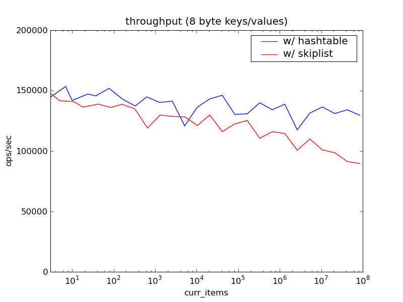
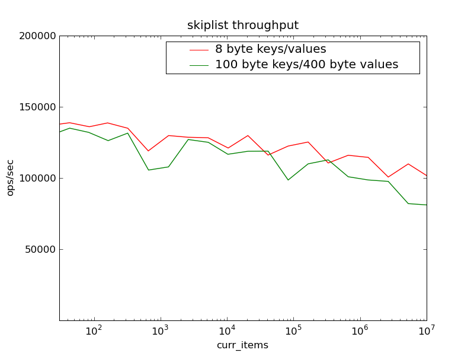

memcached-prefix
by jdybnis
This is an experimental fork off of the memcached 1.3 development branch. It adds commands pget and pdelete that operate on ranges of keys having a common prefix. It also adds a memcachedb compatible rget command.
The main internal change is that the cache is implemented with a skiplist instead of the normal hashtable. Even so, its performance is very close to the standard memcached (see the benchmarks below). Space usage is also roughly unchanged. Each item in the skiplist has an average of 4 bytes more overhead than it would in the hashtable.
New Protocol Commands
pdelete key_prefix
pdelete instructs the server to delete all items that have keys beginning in key_prefix. key_prefix must not be the empty string. Use the flush command instead if you wish to delete all the items in the cache.
pget key_prefix max_items [continue_key]
pget instructs the server to send all the items that have keys beginning with the specified key_prefix. The server will send the items in lexographic key order. max_items is the maximum number of items that the server will send in response to a single pget command. max_items cannot be greater than 100. To retrieve more than max_items the client can issue multiple pget commands that use the continue_key.
If a pget command includes a continue_key then the server will only send back items that lexographically follow after the continue_key.
When the server sends back a number of items equal to max_items, then the client should assume that there are more items on the server matching the key_prefix. To retreive the remaining items the client should remember the key of the last item it received and issue another pget with that key as the continue_key. The server will respond with the next batch of items following the continue_key in lexographic order.
rget start end start_is_open end_is_open max_items
rget is the same as the command in memcachedb. See the memcachedb documentation for usage instructions.
Note: these commands are not standard and may very well change between versions.
Benchmarks
The following measurments compare the performance of memcached-prefix and the standard memcached v1.3.
Setup
The benchmarks were run on a Core i7 920 w/ 12GB RAM and HT enabled. The client was libmemcached based, running in loopback mode against a multi-threaded server on the same machine.
Each benchmark run starts out by loading items into an empty cache until it contains a specific number of items (the x axis of the graphs below). Then for a period of 10 seconds the client issues random commands in the ratio of 90% get, to 5% add, to 5% delete, and measures the number of operations completed per second. The numbers used to build the graphs are averages of multiple runs.
Results
The performance measurements show that there is a remarkably small decrease in throughput between the standard version of memcached (hashtable based) and memcached-prefix (skiplist based). Although the skiplist based version drops in throughput slightly more than the standard hashtable version as the number of items in the cache increases, the throughput of memcached-prefix is close to 100,000 ops/sec, in the worst case tested, with 100 million items in the cache.
Note: The keys and values used in the above benchmark were all 8 bytes to allow more items to fit in the cache than normal, thereby simulating a server with much more RAM. The following graph shows that using larger keys and values only changes the results by a small constant factor.
Download
You can download this project in either zip or tar formats.
You can also clone the project with Git by running:
$ git clone git://github.com/jdybnis/memcached
Contact
Josh Dybnis (fist letter of firstname followed by entire lastname, at gmail.com)